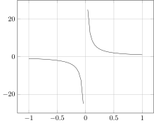
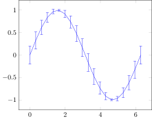
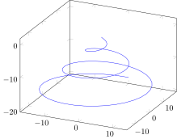
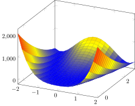

Coordinates
Use Coordinates to construct the pgfplots construct coordinates. Various constructors are available.
Basic usage
For basic usage, consider AbstractVectors and iterables. Notice how non-finite values are skipped. You can also use () or nothing for jumps in functions.
x = range(-1; stop = 1, length = 51) # so that it contains 1/0
@pgf Axis(
{
xmajorgrids,
ymajorgrids,
},
Plot(
{
no_marks,
},
Coordinates(x, 1 ./ x)
)
)
Error bars
Use xerror, xerrorplus, xerrorminus, yerror etc. for error bars.
x = range(0; stop = 2π, length = 20)
@pgf Plot(
{
"no marks",
"error bars/y dir=both",
"error bars/y explicit",
},
Coordinates(x, sin.(x); yerror = 0.2*cos.(x))
)
Symbolic coordinates
@pgf Axis(
{
ybar,
enlargelimits = 0.15,
legend_style =
{
at = Coordinate(0.5, -0.15),
anchor = "north",
legend_columns = -1
},
ylabel = raw"\#participants",
symbolic_x_coords=["tool8", "tool9", "tool10"],
xtick = "data",
nodes_near_coords,
nodes_near_coords_align={vertical},
},
Plot(Coordinates([("tool8", 7), ("tool9", 9), ("tool10", 4)])),
Plot(Coordinates([("tool8", 4), ("tool9", 4), ("tool10", 4)])),
Plot(Coordinates([("tool8", 1), ("tool9", 1), ("tool10", 1)])),
Legend(["used", "understood", "not understood"])
)
3D
Use three vectors to construct 3D coordinates.
t = range(0; stop = 6*π, length = 100)
@pgf Plot3(
{
no_marks,
},
Coordinates(t .* sin.(t), t .* cos.(t), .-t)
)
Edge vectors
A convenience constructor is available for plotting a matrix of values calculated from edge vectors.
x = range(-2; stop = 2, length = 20)
y = range(-0.5; stop = 3, length = 25)
f(x, y) = (1 - x)^2 + 100*(y - x^2)^2
@pgf Plot3(
{
surf,
},
Coordinates(x, y, f.(x, y'))
)
Heatmap
x = range(-2; stop = 2, length = 40)
y = range(-0.5; stop = 3, length = 50)
@pgf Axis(
{
view = (0, 90),
colorbar,
"colormap/jet",
},
Plot3(
{
surf,
shader = "flat",
},
Coordinates(x, y, @. √(f(x, y')))
)
)
Matrix plot
x = repeat(0:2, outer = 3)
y = repeat(0:2, inner = 3)
meta = ["color=$c" for c in ["red", "blue", "yellow", "black", "brown", "magenta", "green", "red", "white"]]
c = Coordinates(x, y; meta = meta)
@pgf Axis(
{
enlargelimits = false,
xtick = [0, 1, 2]
},
PlotInc(
{
matrix_plot,
mark = "*",
nodes_near_coords = raw"\coordindex",
"mesh/color input" = "explicit",
"mesh/cols" = 3
},
c,
)
)